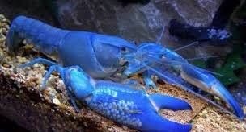

This species is native in Australia, and both male and female have infamously powerful pinchers, male’s being twice as big as female’s. They can grow quite big (like most arthropods in Australia), significantly bigger than the previous two species. Requiring a slightly narrower temperature range, they still can live very well in Taiwan all year round. They come in many color varieties in nature, and it was until very recent years that scientist decided that the blue is the same species as the rest of other colors.
One very special thing about this species is that though very territorial, male and female tend to get along peacefully after they mate and even like to stay together in one spot. But they are not so nice to other creatures in the tank: as the name suggests, this is the kind of crayfish that destroys every living thing, animals and plants alike. By actually keeping one I learned another secret about them: they have very flexible shoulders that can reach much further back than most other crayfish species. I learned it the hard way by trying to grab mine from behind.
這個物種原產於澳洲。無論公母，牠們的大螯都非常非常有力；雄性的大螯是雌性的兩倍大。牠們能長得頗大（這是澳洲大部分節肢動物的共同特色），比前述的兩個物種大得多。牠們對於水溫的要求比上述兩種螯蝦嚴苛一些，但在台灣全年的氣溫範圍內也都能適應良好。牠們在自然界中就有許多不同的顏色；直到最近幾年，科學家才確定藍色的種類和其他種類是同一個物種。
這個物種有個特色：雖然牠們的領域性很強，雌蝦和雄蝦通常在交配一次後就能和平共處，甚至喜歡兩隻一起擠在一個藏身處。但牠們對同一缸裡的其他生命十分兇殘；牠們是名副其實的「破壞者」，會毀滅魚缸中的一切其他活物，動植物都難逃毒手。在自己飼養的過程中我學到了關於牠們的另一個小秘密：不像大部分其它螯蝦，牠們的「肩膀」關節非常柔軟，能搆到背後一段距離以外。我會知道是因為我嘗試過從背後抓起我的破壞者螯蝦，並且付出了慘痛的代價。
